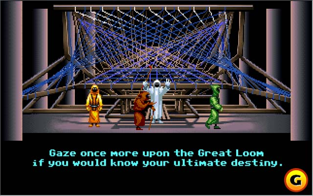

|
En la magia planteamos que nuestra naturaleza puede asemejarse a la de un Dios o manifestarla a nuestro través, y entendemos disponer de acceso al vastísimo e intrincado telar de la existencia. Una estructura cuyos componentes podemos anudar y desanudar, con el potencial de traducir nuestras modificaciones en grandes cambios en la realidad.
Pero demasiado habitualmente asimilamos esta idea del cambio con una percepción limitadamente personal de la existencia. Con aquello que parece afectarnos directamente, con lo que vivimos cada día. Operamos en lo real para manifestar cambios que en último término afectan a una parte extremadamente minúscula del telar, tan pequeña como nosotros mismos.

Es un crimen constreñir el verdadero poder al que puede aspirar un mago a tales pequeñeces, y lamentablemente el crimen de la visión limitada se encuentra muy extendido y aceptado. Una habilidad mágica lo bastante desarrollada unida a un conocimiento suficiente, puede ejecutar cambios a nivel de las sociedades, capaces de afectar a la propia historia.
No significa esto que la pura técnica mágica sea suficiente. Si queremos cambiar algo a nivel global en nuestra sociedad es necesario entender cómo funciona aprendiendo acerca de las materias apropiadas. Tan imprescindible sería entender la “sociedad disciplinaria” tal como la plantea Foucault como desarrollar la habilidad mágica apropiada para cristalizar un cambio que afecte al carácter disciplinario omnipresente en las instituciones. Tan imprescindible puede ser preguntarse por qué en nuestra física una diversidad tan enorme de fenómenos se ajustan al lenguaje matemático como aprender mecanismos para gestionar la estructura simbólica de lo real.
La labor de un mago que quiera ir más allá de su pequeña experiencia de vida a la hora de manipular los hilos del tejido de la realidad, necesita de un esfuerzo mucho mayor que las pequeñas alteraciones de lo real orientadas a su experiencia vital más inmediata.
Pero también son mayores las recompensas.
Para decirlo más claro. Si te metes en serio en este tipo de trabajo, no puedes acomodarte. Tu autodisciplina debe ser creciente, y debes esforzarte por no flaquear. Tienes que estar siempre pensando en grande y pensando en positivo, porque si no lo haces y muestras signos de debilidad, acabarás siendo incapaz de hacer nada porque tu poder será delegado a otros pieza a pieza, hasta que no te quede nada.
Cuanto más grande y positivo pienses respecto a lo que vas a hacer en este inabarcable telar, más poder se te otorgará. Uno podría pretender culpar de esto a una agencia de carácter moral que decidiera personalmente otorgar tal poder, pero no hay ningún motivo por el que tenga que ser así; tal empoderamiento no tiene por qué ser más que la consecuencia lógica de la propia naturaleza de ese pensar a lo grande y llevarlo a cabo.
Quizá lo imposible de nuestra labor pueda facilitarla. Si no hay ante quien lucirse e hinchar el ego, porque lo que hacemos es imposible (¡pero aun así lo hacemos!), motivo de más para que nuestras acciones verdaderamente se dirijan hacia un cambio a mejor. No debemos esperar que nadie nos agradezca nada, e incluso al contrario, hemos de asumir que si acaso las reacciones de un oyente casual serán de incredulidad y hasta ridículo. ¡Y eso debería volvernos cuidadosos! Porque la incredulidad es contagiosa, y dudar de nosotros mismos puede ser el peor enemigo de nuestra magia. Debe ser nuestro propio sentido crítico el que aprenda a evaluar dejando al ego de lado los resultados de nuestras acciones, contando como su auténtico objetivo el de evaluarlas, mejorarlas, hacerlas más ambiciosas, más grandes, mejores.
|
 RSS
RSS